大学自驾的第一程，从二十度的花城，
开向暗夜里的雪山。
这是我大学自驾旅行的第一段路。出发那年冬天，距离高考完的暑假拿到驾照，还刚不到半年。尽管自认开车还算有天赋，要一个人把方向盘握过两千多公里的西南山川，依然是一次让人手心冒汗的硬仗。
以前只接触过油车、从没碰过电车，在查了大量资料之后，落地昆明还是坚定取了一辆租来的 2025 款特斯拉 Model Y Performance 全轮驱动版。第一天先跑了一趟抚仙湖试车再折返昆明，随后才真正向西进腾冲、沿怒江北上闯进梅里雪山脚下的冰雪夜路。那时还没有无人机，相机也刚上手不久，这十二张照片，记录的是所有远行真正立起来的地方。
- Date
- 2025.01.13 — 01.23（11 天）
- Vehicle
- 2025 Tesla Model Y Performance 全轮驱动版
- Gear
- Nikon Z f
- Frames
- 12
- Route
- 昆明 ⇄ 抚仙湖试车 → 腾冲 → 沿怒江北上德钦 · 卡瓦格博 → 丽江 · 大理 → 昆明（约 2,315 km）
TENGCHONG · JANUARY 15
二十度的暖冬边城
北方还是严冬的一月，腾冲却暖得像春天；在奔赴雪山之前，古镇、温泉与青苔给了远行者最松弛的一天。
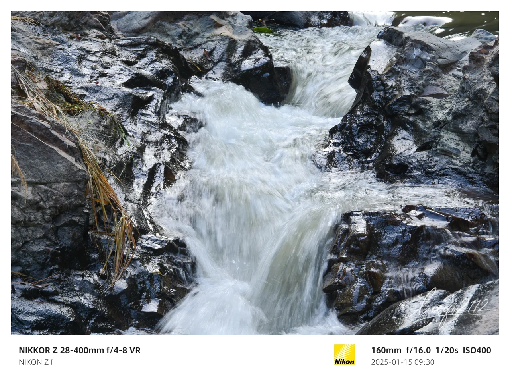
清晨九点半，热气裹着水声从火山岩缝间冲下来，放慢快门把水流拉成柔白的丝。
离开北方寒风落进滇西，最先接住人的是腾冲二十度上下的晴朗暖意——不冷不热，风里带着青草气，实在配得上花城的名声。一早看热海的温泉水从深色火山岩间轰鸣涌下，下午逛进和顺古镇的安静巷陌，艾思奇纪念馆门口那架覆满青苔的大水车不知疲倦地缓缓转动，连躲在花叶后面的猫都不紧不慢的。
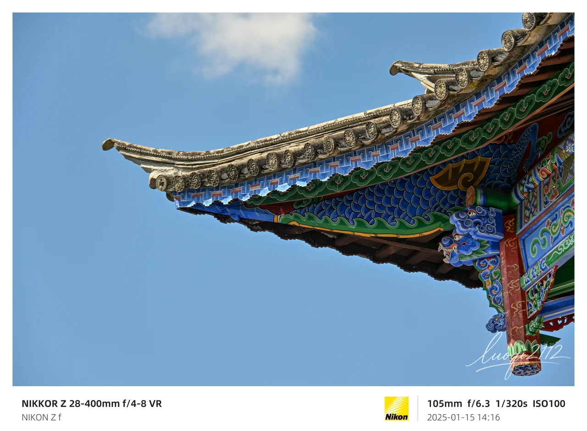
层层叠叠的青瓦飞檐，把午后的光线收得很安静。
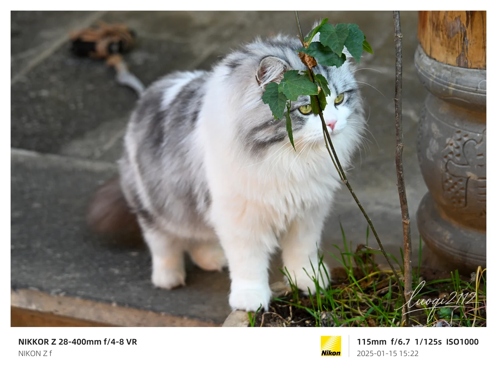
躲在叶片后面盯了镜头好一会儿也没挪窝，一副才是古镇原住民的神态。
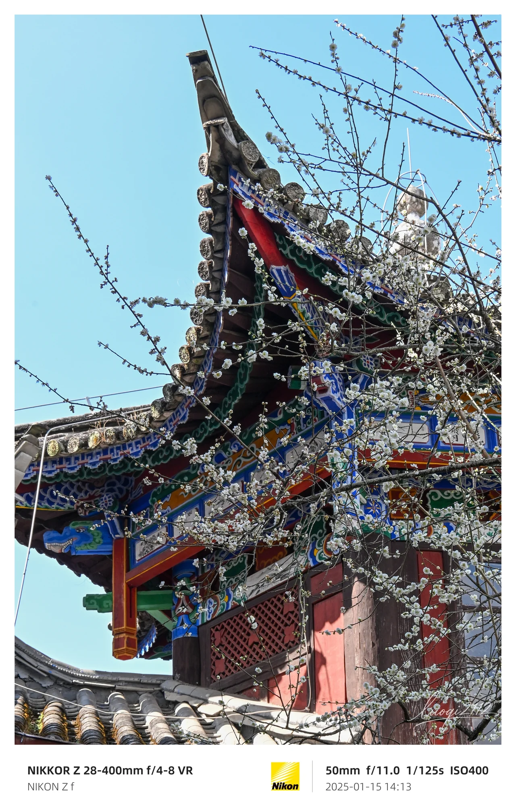
一月的花还在檐角盛开，不冷不热的风吹过老屋脊，这才是花城该有的冬天。
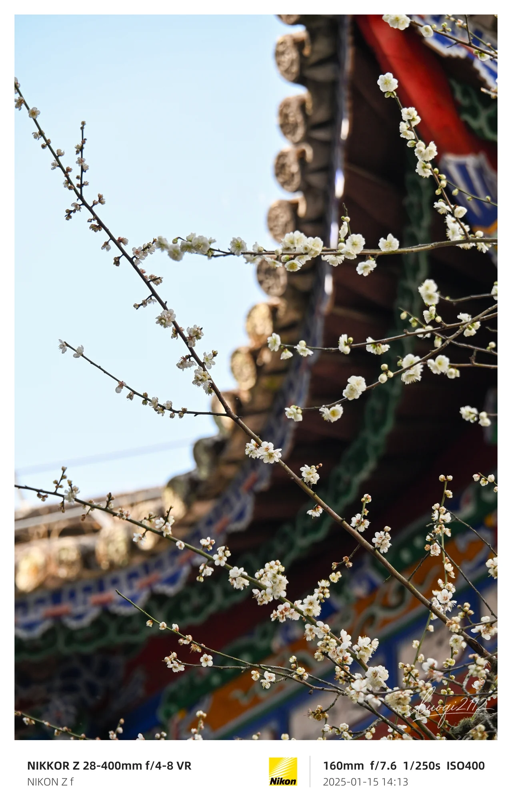
把焦段推进到 160mm，下午两点的斜阳正好落在花瓣与木雕梁枋之间。
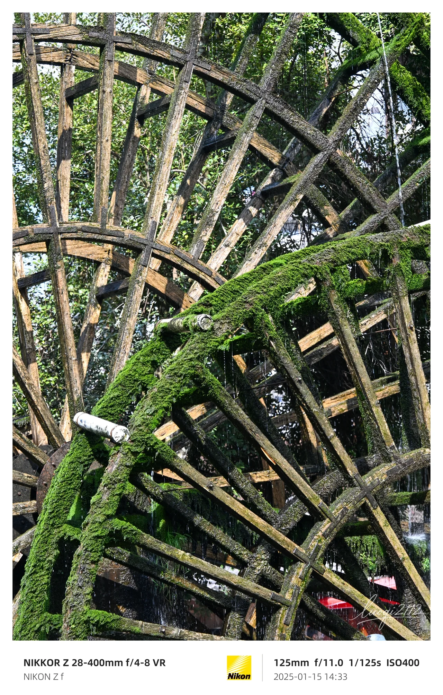
木质轮辐上裹着厚实温润的青苔，水声一阵阵落在青石板上。
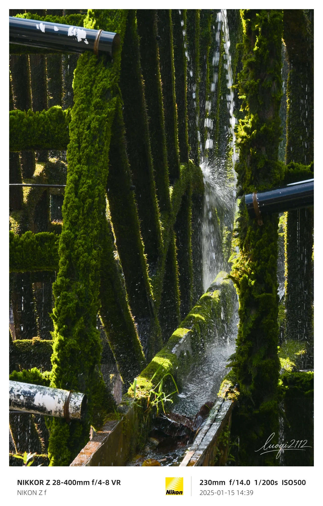
推到 230mm 长焦特写水滴与绿苔，时间像是跟着水车一起慢了下来。
WESTERN YUNNAN WAR OF RESISTANCE MEMORIAL · JAN 15
十万青年十万军
整章只留一幅竖框画面。在奔赴雪山前夕，停步致敬八十年前的山河岁月。
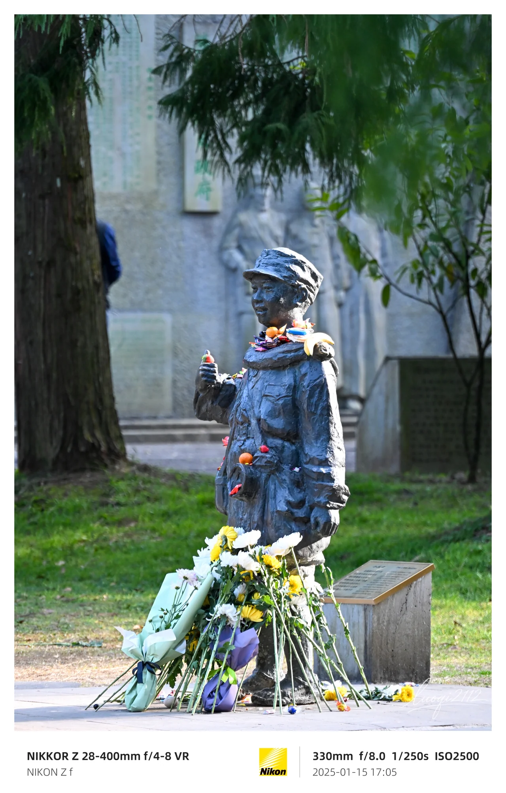
傍晚五点，树影安静覆在雕像与鲜花上。向八十年前挺身而出的十万青年致敬。
一直非常热爱历史，书本和纪录片里的文字也看过许多，但真正迈进滇西抗战纪念馆、站在实打实的遗物与名字面前，那种劈面而来的震撼，隔着屏幕永远感受不到。
“一寸山河一寸血，十万青年十万军。”从昆明的西南联大旧址一路走到腾冲的国殇墓园与纪念馆，站在这片土地上才真正明白，和平从来不是理所当然的馈赠。
书里读过无数遍的历史，真正走到这片土地上，震撼依然铺天盖地。
KAWAGEBO · JANUARY 16–17
暗夜冰路之后，热泪盈眶的日照金山
先急坠入 G219 怒江峡谷，再天黑摸进无护栏无灯火的结冰破败省道——只为清晨这一刻金光。
卡瓦格博，才是这趟云南之行我最魂牵梦萦的终点。来之前，1991 年中日联合登山队遇难的纪录片我已翻来覆去看过好几遍，对这座至今未被人类登顶的神山，心里装着沉甸甸的敬意。
可抵达它的路，几乎耗尽了新手司机全部的胆量。离开腾冲，海拔先是急速下坠跌到 G219 旁的怒江，再沿着江水一路北上，拐进翻越梅里外围群山的省道时，天已经彻底黑透。那是一条狭窄陡峭到让人窒息的破烂山路——没有护栏、没有一盏路灯、连一辆错车都没有，背阴弯道上还铺着暗冰和积雪。拿驾照刚不到半年的我，硬是顶着心跳如鼓一寸寸把车摸进了德钦。
穿过没有护栏与灯火的暗夜冰路，等来毫无遮挡的日照金山——那一刻，热泪盈眶。
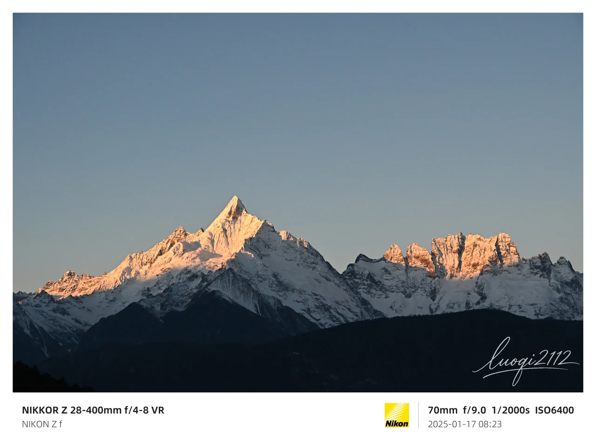
08:23，第一缕金光劈中主峰的那一秒，兴奋得手都在抖，连 ISO 6400 都顾不上调，只管拼命按快门。
晨光铺满整片梅里山脊，一轮浅白的残月还悬在山尖上不肯退场——人生第一张雪山，毫无遮挡地站到了面前。
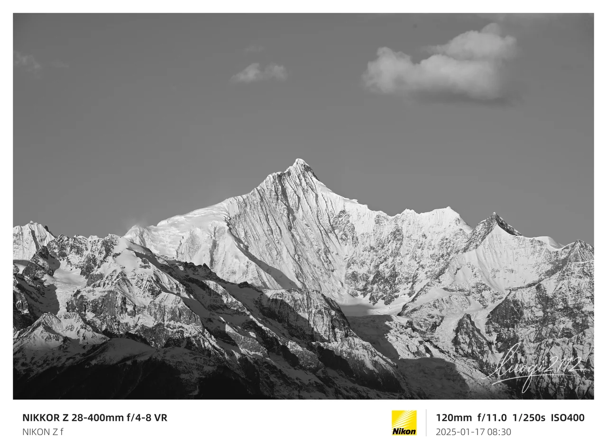
抽掉色彩之后，卡瓦格博只剩下刀削般的山脊、积雪与阴影，显出神山原本的冷峻与威严。
第二天摸黑在观景台支好三脚架时，这是我人生第一次拍雪山，手头没有无人机，相机操作也还生疏。好在命运给了这场孤勇最慷慨的回应——云雾散尽、没有一丝遮挡的日照金山就在眼前轰然点燃。拍完这一组，当天下午便背起包徒步几十公里扎进了雨崩村——那又是另一场硬仗。
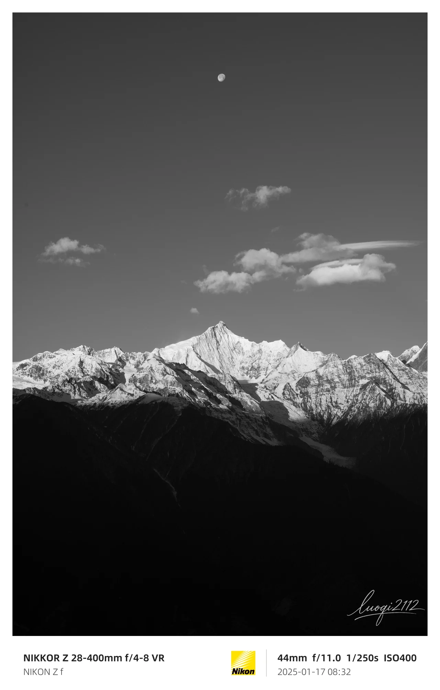
拉长焦段让残月与山巅同框。收起三脚架，下午便启程徒步几十公里进雨崩村。
ROLL 03 END · LOOKING BACK
所有远行的底气，
从这里立起来。
云南与半年后的川藏加起来七千多公里，冰雪夜路、高原碎石一路闯过来，特斯拉没有出现过任何一次故障，让人无比安心——当然，这之后国产电车也迎头赶上，那是后话。但正是那个冬天、那台车和卡瓦格博的晨光，把刚拿驾照半年的我，真正送上了“走遍天下都不怕”的路上。
浏览全部摄影作品